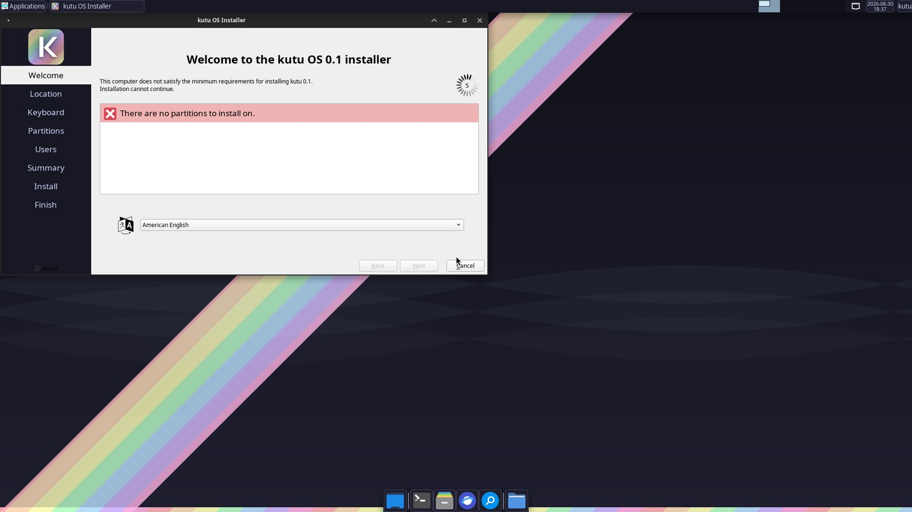
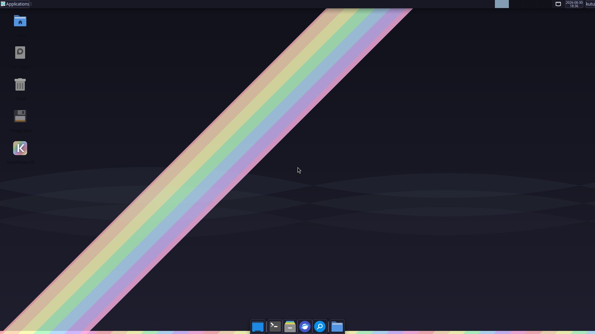
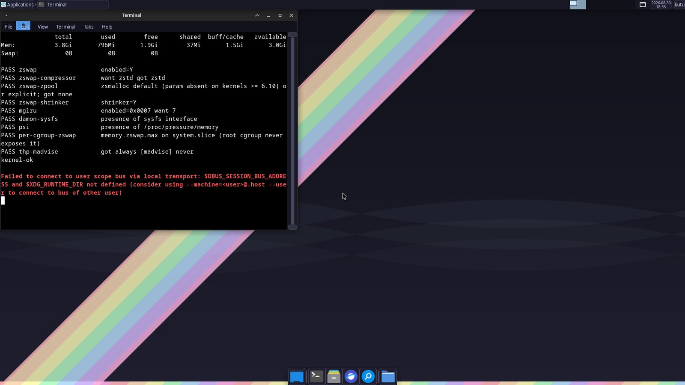

DRAM prices roughly quintupled between 2025 and 2026, and analysts expect no relief before 2028. kutu OS applies the memory stack Google and Meta proved at fleet scale — zswap, MGLRU, DAMON, PSI-driven oomd — to an ordinary desktop, with safe defaults and nothing to configure. Every gigabyte your software doesn't waste is an upgrade you don't have to buy.
A complete desktop that treats memory as the scarce resource it now is.
zstd-compressed zswap, MGLRU page aging and DAMON proactive reclaim typically reclaim 20–40% of your effective working set.
RAM-size calibration picks saver, balanced or performance mode — user and per-app memory ceilings included.
Boot the live USB, poke around, then let the offline Calamares installer put it on disk. No accounts, no network needed.
Plain pacman -Syu against the kutu repository. It's still Arch underneath: the wiki, AUR and everything else work.
sudo kutu-reset returns the whole stack to stock behavior. Every tweak is a package, every package is removable.
Curated XFCE with dark theming, Firefox wrapped in per-app memory ceilings, and wallpapers that won't eat your battery.
Fleet-proven kernel machinery, tuned for a desktop and locked by a tested spec.
Real screenshots — the live session and installer, captured from a QEMU boot of the ISO.



The whole memory stack ships as ordinary pacman packages from the kutu repo.
Add to /etc/pacman.conf:
[kutu] Server = https://kutuso.github.io/os/repo/$arch/
Then pacman -Sy kutu-memory — or grab the ISO for the full desktop.